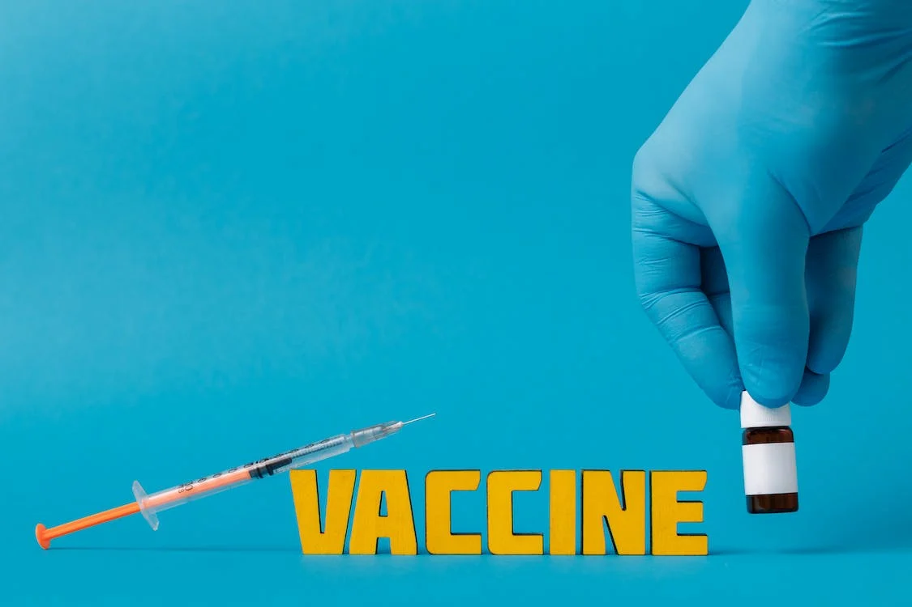
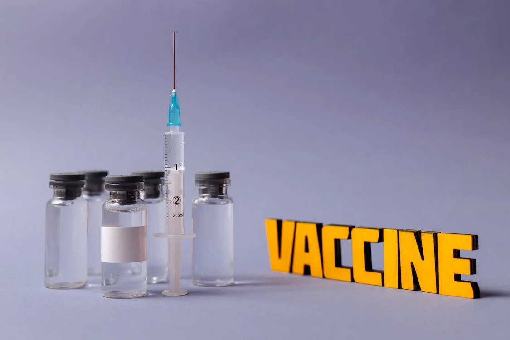

Um novo remédio desenvolvido por pesquisadores renomados promete revolucionar o tratamento de diversas doenças crônicas, trazendo esperança para milhões de pacientes em todo o mundo. Os resultados dos testes clínicos preliminares são promissores, indicando uma eficácia sem precedentes na melhoria da qualidade de vida dos pacientes.
Sobre o "CuraTotal"
O novo medicamento, denominado "CuraTotal", foi formulado com base em anos de pesquisa e desenvolvimento. Sua composição única visa abordar as causas subjacentes de doenças crônicas, proporcionando não apenas alívio dos sintomas, mas também uma abordagem holística para o tratamento.
Palavras do Especialista
De acordo com o Dr. João Silva, líder da equipe de pesquisa responsável pelo desenvolvimento do "CuraTotal", "Este é um marco significativo na medicina moderna. Estamos confiantes de que nosso medicamento pode fazer uma diferença real na vida dos pacientes, oferecendo uma alternativa eficaz e segura para o tratamento de doenças crônicas."
Disponibilidade Futura
O "CuraTotal" está atualmente passando por revisões regulatórias finais e espera-se que esteja disponível para prescrição médica em breve. Os pacientes interessados devem consultar seus médicos para obter mais informações sobre o medicamento e sua elegibilidade para o tratamento.

Com a introdução do "CuraTotal", muitos esperam uma mudança significativa no cenário médico, com potencial para melhorar drasticamente a qualidade de vida de inúmeras pessoas afetadas por doenças crônicas em todo o mundo...